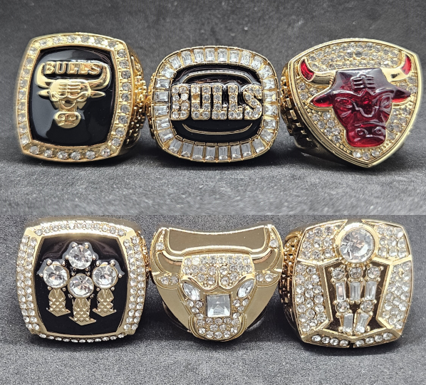
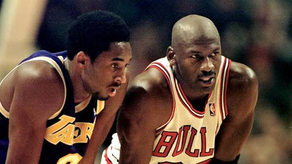

Michael Jordan's legacy extends far beyond his achievements on the basketball
court. His career helped shape how basketball was played, watched, and
represented around the world. His success, competitiveness, and influence
made him one of the most recognisable athletes in sports history.
Jordan's six NBA Championships with the Chicago Bulls are an important part
of his legacy. He won all six championships during the 1990s and was named
Finals MVP in each of them. These achievements became a major part of how
his career is remembered and helped establish the Bulls as one of the
defining teams of the era.
Jordan also influenced generations of players who came after him. Kobe
Bryant was one of the most notable examples, studying Jordan's game and
using aspects of his playing style and approach to the game as inspiration.
Jordan's influence can also be seen in many other players who grew up
watching him and were inspired to develop their own careers in basketball.
His impact continues through basketball, sport, and pop culture. Jordan
helped make basketball more internationally recognised, while his
achievements and influence continue to be discussed by new generations of players and fans. His legacy is therefore not only about what he achieved
himself, but also about the influence he had on those who followed him.
.jpg)

